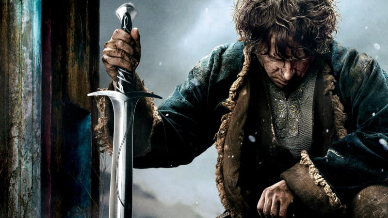

Bilbo and company are forced to engage in a war against an array of combatants and keep the Lonely Mountain from falling into the hands of a rising darkness. After the Dragon leaves the Lonely Mountain, the people of Lake-town see a threat coming. Orcs, dwarves, elves and people prepare for war. Bilbo sees Thorin going mad and tries to help. Meanwhile, Gandalf is rescued from the Necromancer's prison and his rescuers realize who the Necromancer is. Bilbo and the Company of King Thorin Oakenshield are forced into war by the Orcs of Gundabad and Moria lead by Azog and Bolg and chief leader Sauron. Its a remarkable battle with the Dwarves of Erebor and the Iron Hills, The Elves of the Woodland Realm, The people of Laketown, The eagles lead by Radagast and Beorn and the Orcs of Gundabad and Moria. How will this battle end?
